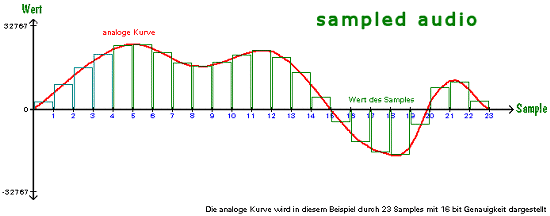
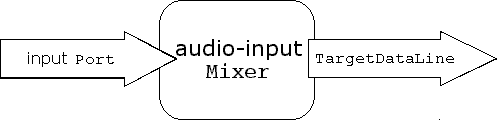
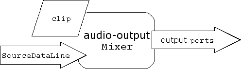

1.1 Das Sampled Package
1.1.1 Sampled audio

Audio Daten (sampled audio) können im Rechner nur genähert, d.h. als Diskretisierung eines kontinuierlichen Signals, dargestellt werden. Für diesen Zweck haben sich unterschiedliche Standards (Datenformate) entwickelt.
Datenformate
Das Datenformat wird repräsentiert als AudioFormat object, mit folgenden Eigenschaften
- Encoding technique, pulse oder modulation (PCM)
- Number of channels (1 für mono, 2 für stereo)
- Sample rate (number of samples per second, per channel)
- Number of bits per sample
- Frame rate
- Frame size in bytes (Summe der Größen aller Samples (für jeden Channel eins) zu einem Zeitpunkt)
- Byte order (big-endian or little-endian)
Dateiformate
Aus den Datenformaten leiten sich zum Speichern entsprechende Datenformate ab. Das Dateiformat wird repräsentiert als AudioFileFormat object, mit den Eigenschaften:
- file type (WAVE, AIFF, etc.)
- file's length in bytes
- length, in frames, der audio daten
- AudioFormat
1.1.2 Zugriff auf System Resourcen
AudioSystem
Durch die Klasse AudioSystem (sie muß nicht erzeugt werden) können alle installierten Resourcen erfragt und angesprochen werden durch info Objekte.
1.1.3 Die Geräte - Mixer
- Eine Device (Gerät) wird als mixer object dargestellt.
- Repräsentiert sowohl hardware (Soundcard) als auch software devices
(Effect plugin).

- audio-input mixer: empfängt über input
ports (microphone input) und sendet durch TargetDataLines

- audio-output mixer: empfängt über Clips
oder SourceDataLines
und sendet durch output
ports (speaker).

- Verwaltet sogar mehrere audio input und output streams.
- Das Mixer interface unterstützt Synchronisation.
1.1.4 Abspielen von Audio (playing back / rendering)
Es gibt zwei Arten Audio Daten abzuspielen:
- SourceDataLine: streaming (real-time Daten bzw. zu viele Daten für den Speicher)
- Clip: non-real-time (Audio Daten befinden sich preloaded im Speicher)
Schreiben in eine SourceDataLine
void open(); void open(AudioFormat format); void open(AudioFormat format, int bufferSize);
Mit den Methoden start
und stop wird das
Abspielen begonnen bzw. beendet.
//read chunks from a stream and write them to a source data line
line.start();
while (total < totalToRead && !stopped)}
numBytesRead = stream.read(myData, 0, numBytesToRead);
if (numBytesRead == -1) break;
total += numBytesRead;
line.write(myData, 0, numBytesRead);
}
...
//this is the final invocation of write
line.drain();
line.stop();
line.close();
line = null;
Clip
void open(AudioInputStream stream); void open(AudioFormat format, byte[] data, int offset, int bufferSize);
Eine Besonderheit von Clip ist, das die audio Daten komplett geladen werden,so dass sie auch geloopt abgespielt werden können.
Monitoring eines Line Status
Mit folgender methode registriet man ein Objekt beim Line Objekt als Listener,
public void addLineListener(LineListener listener);
so daß LineEvents wie OPEN, CLOSE, START, and STOP empfangen werden können.
1.1.5 Aufnehmen von Audio (capturing / recording)
Lesen aus einer TargetDataLine
- read um Audio Daten vom Mixer zu erhalt.
- available methode
zum Prüfen, ob noch Daten im Puffer sind.
TargetDataLine line;
DataLine.Info info = new DataLine.Info(TargetDataLine.class,format);
// format is an AudioFormat object
// Obtain and open the line.
try {
line = (TargetDataLine) AudioSystem.getLine(info);
line.open(format);
} catch (LineUnavailableException ex) {
// Handle the error ...
}
ByteArrayOutputStream out = new ByteArrayOutputStream();
int numBytesRead;
byte[] data = new byte[line.getBufferSize() / 5];
// Begin audio capture.
line.start();
// Here, stopped is a global boolean set by another thread.
while (!stopped) {
// Read the next chunk of data from the TargetDataLine.
numBytesRead = line.read(data, 0, data.length);
// Save this chunk of data.
out.write(data, 0, numBytesRead);
}
1.1.6 Processing Audio mit Controls
- Typische Controls sind gain, pan, and reverb
- Sie werden durch getControl
und eine Konstante angesprochen:
FloatControl volCtrl =
(FloatControl) lineIn.getControl(FloatControl.Type.VOLUME);
1.1.7 Verwendung von Dateien
Aus einer Datei lesen:
int totalFramesRead = 0;
File fileIn = new File(somePathName);
try {
AudioInputStream audioInputStream =
AudioSystem.getAudioInputStream(fileIn);
int bytesPerFrame = audioInputStream.getFormat().getFrameSize();
// Set an arbitrary buffer size of 1024 frames.
int numBytes = 1024 * bytesPerFrame;
byte[] audioBytes = new byte[numBytes];
try {
int numBytesRead = 0;
int numFramesRead = 0;
// Try to read numBytes bytes from the file.
while ((numBytesRead = audioInputStream.read(audioBytes)) != -1) {
// Calculate the number of frames actually read.
numFramesRead = numBytesRead / bytesPerFrame;
totalFramesRead += numFramesRead;
// Here, do something useful with the audio data that's
// now in the audioBytes array...
}
} catch (Exception ex) {
// Handle the error... (UnsupportedAudioFileException)
}
} catch (Exception e) {
// Handle the error...
}
In eine Datei schreiben:
File fileOut = new File(someNewPathName);
AudioFileFormat.Type fileType = fileFormat.getType();
if (AudioSystem.isFileTypeSupported(fileType, audioInputStream)) {
AudioSystem.write(audioInputStream, fileType, fileOut);
}